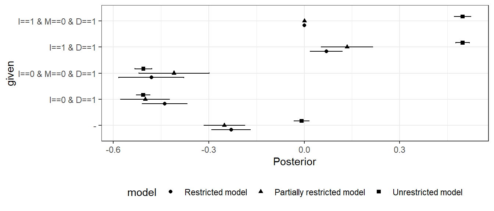

16 Evaluating Models
Chapter summary
We describe strategies for figuring out whether a model is likely doing more harm than good and for comparing the performance of different models to one another.
Throughout this book, we have maintained the conceit that you believe your model. But it is also obvious that even the most nonparametric-seeming models depend on substantive assumptions and that these are almost certainly wrong. The question then is not how much you believe your model (or whether you really believe what you say you believe) but whether your model is useful in some sense. How can we evaluate the usefulness of our models?
16.1 Four Strategies
In this chapter, we will describe four strategies and show them at work for a running example in which we know a model poorly captures an assumed causal process. We will then use turn the four strategies loose on the two models that we examined in Chapters Chapter 8 and Chapter 10.
Here’s our running example. Imagine a true causal process involving \(X\), \(M\), and \(Y\). Say that \(X\) affects \(Y\) directly, \(M\) never has a negative effect on \(Y\), and \(X\) has no effect on \(M\) (and so there is no indirect effect of \(X\) on \(Y\) via \(M\)). But imagine that researchers wrongly suppose that the effect of \(X\) on \(Y\) runs entirely through \(M\), positing a model of the form \(X \rightarrow M \rightarrow Y\).
The problem with the posited model, then, is that it represents overly strong beliefs about independence relations: It does not allow for a direct effect that is in fact operating.
We are perfectly able to update using this too-strong \(X \rightarrow M \rightarrow Y\) model and data—but the updated model can produce wildly misleading causal inferences. We show this using a set of 200 observations simulated from a model that has direct effects only and an average effect of \(X\) on \(Y\) of \(1/3\).
In the left panel of Figure 16.1, we show the estimated average treatment effect of \(X\) on \(Y\) when using these data to update the \(X \rightarrow M \rightarrow Y\) model. In the right panel, we show the inferences we would make using the same data but using a model that makes weaker assumptions by allowing for direct effects: An \(X \rightarrow M \rightarrow Y \leftarrow X\) model. With both models, we start with flat priors over nodal types.
We represent the (stipulated) true average effect with the vertical line in each graph.
As we can see, the weaker (i.e., more permissive) model performs alright: The true effect falls within the posterior distribution on the ATE. However, the stronger model, which excludes direct effects, generates a tight posterior distribution that essentially excludes the right answer. So, if we go into the analysis with the stronger model, we have a problem.
But can we know we have a problem?
In the remainder of this section, we explore a range of diagnostics that researchers can undertake to evaluate the usefulness of their models or to compare models with one another: Checking assumptions of conditional independence built into a model; checking the model’s fit; using “leave-one-out” cross-validation; and assessing model sensitivity.
16.1.1 Check Conditional Independence
First, even before engaging in updating, we can look to see whether the data we have are consistent with the causal model we postulate. In particular, we can check whether there are inconsistencies with the Markov condition that we introduced in Chapter 2: That every node is conditionally independent of its nondescendants, given its parents.
In this case, if the stronger model is right, then given \(M\), \(Y\) should be independent of \(X\).
Is it?
One way to check is to assess the covariance of \(X\) and \(Y\) given \(M\) in the data. Specifically, we regress \(Y\) on \(X\) for each value of \(M\), once for \(M=1\) and again for \(M=0\); a correlation between \(X\) and \(Y\) at either value of \(M\) would be problematic for the conditional independence assumption embedded in the stronger model.
Note that this form of diagnostic test is a classical one in the frequentist sense: We start by hypothesizing that our model is correct and then ask whether the data were unlikely given the model.
| M | estimate | std.error | p.value |
|---|---|---|---|
| 0 | 0.345 | 0.093 | 0.000 |
| 1 | 0.341 | 0.096 | 0.001 |
We report the regression coefficients on \(X\) in Table 16.1. It is immediately apparent that we have a problem. At both values of \(M\), and especially when \(M=0\), there is a strong correlation between \(X\) and \(Y\), evidence of a violation of the Markov condition implied by the stronger model.1
Identifying the full set of conditional independence assumptions in a causal model can be difficult. There are however well developed algorithms for identifying what sets, if any, we need to condition on to ensure conditional independence between two nodes given a DAG.2
16.1.2 Bayesian p-Value: Are the Data Unexpected Given Your Model?
A second—though clearly related–approach asks whether features of the data we observe are in some sense unusual given our updated model, or more unusual given our model than another model. For instance, if one model assumed no adverse effects of \(X\) on \(Y\) and no confounding, then a strong negative correlation between \(X\) and \(Y\) would be unusual, even for the model updated with this data; and this negative correlation would be more unusual for this model than for a model that allowed for adverse effects.
This approach is also quite classical: We are looking to see whether we should “reject” our model in light of inconsistencies between the data we have and the data we expect to see given our updated model. The idea is not to figure out whether the model is false—we know it is—but whether it is unacceptably inconsistent with data patterns in the world (Gelman 2013).
An approach for doing this using simulated data from the posterior predictive distribution is described in Gabry et al. (2019).3 The basic procedure we employ here is to:
- Draw a parameter vector from the posterior.
- Draw data using the parameter vector.
- Calculate a test statistic using these data.
- Repeat 1 - 3 to build up a distribution of test statistics.
- Calculate the same test statistic using the real data (the observed statistic).
- Assess how extreme the observed statistic is relative to the distribution of statistics generated from the posterior (e.g. the probability of getting a test statistic as large or larger than the observed statistic).
Note that in this straightforward calculation we assess the probability of the data given the same model that generated the data; approaches could also be used that seek out-of-sample estimates of the probability of observing the observed data.
We note that the \(p\) values generated in this way are not necessarily “calibrated” in the sense that given a true vector \(\theta\), the distribution of the \(p\) value is not uniform (Bayarri and Berger 2000).4 It nevertheless gives an indication of whether the data are unusual given our model. As an illustration, imagine a simple \(X\rightarrow Y\) model and imagine that in truth the effect of \(X\) on \(Y\) were 1. Say we observe \(N\) cases in which \(X\) and \(Y\) are indeed perfectly correlated; we update our model and then draw data from this updated model. What are the chances that the data we draw would also be perfectly correlated, like the data we put into the model? In fact, surprisingly, the answer is “low,” and, moreover how low depends on \(N\).See this result plotted in Figure 16.2. In other words, the extreme data we see can seem extreme to us—even after we have updated using the right model and extreme data.
Returning to our running example, we consider two test statistics and compare performance for the stronger and weaker model (Figure 16.3. First, we look just at the distribution of the outcome \(Y\) to see how the actual distribution in the data compares to the predicted distribution from the updated model. Second, we look at the actual correlation between \(X\) and \(Y\) and see how this compares to the predicted distribution. In both cases we calculate a two-sided \(p\)-value by assessing the chances of such an extreme outcome as what we observe. If the observed data were at the mean of the predictive distribution, then we would have a \(p\)-value of 1. If they were at the 95th percentile (and the distribution of test statistics under the model were symmetric) we would have a \(p\)-value of 0.10.
For the first test, we see that the predicted distribution of the outcome \(Y\) is similar for both updated models; and the actual mean outcome is within the distribution of predicted mean outcomes. The \(p\)-values for the stronger (1) and weaker models (0.87) suggest that the observed mean \(Y\) value is not unusual for either model. No clues there. This is a fairly “easy” test in the sense that many models should have little difficulty producing a reasonable distribution for \(Y\) even if they are problematic in other ways.
When it comes to the correlation between \(X\) and \(Y\), however, the two models perform very differently. The posterior predictive distribution from the stronger model is centered around a \(0\) correlation and does not even extend out as far as the observed correlation. The resulting \(p\)-value is 0, meaning that from the perspective of the stronger model the \(X,Y\) correlation in the data is entirely unexpected. A frequentist looking at the observed correlation between \(X\) and \(Y\) should feel comfortable rejecting the stronger model. The updated weaker model, in contrast, predicts a strong correlation, and the observed correlation is comfortably within the posterior predictive distribution, with a \(p\)-value of 0.41.
At first blush, the abysmal performance of the stronger model may seem surprising. Even after this model has seen the \(X,Y\) correlations in the data, the model still finds those correlations highly surprising. The \(X \rightarrow M \rightarrow Y\) model fails to learn, however, because the strong assumptions on independence do not provide the flexibility it needs to capture the complex relations between \(X\), \(M\), and \(Y\). The problem is that \(M\) is uncorrelated with \(X\) in the true data-generating process, so the stronger model learns that there is no indirect effect. But, at the same time, this model does not allow for a direct effect. Despite what would seem to be overwhelming evidence of a systematic \(X,Y\) correlation, a causal relationship connecting \(X\) to \(Y\) remains extremely unlikely given the \(X,M\) data pattern and the impossibility of direct effects. The stronger model just can’t handle the truth. The weaker model, on the other hand, readily learns about the direct \(X \rightarrow Y\) effect.
16.1.3 Leave-One-Out Likelihoods
A further class of model-validation methods involves cross-validation. Rather than asking how well the updated model predicts the data used to update it, cross-validation uses the data at hand to estimate how well the model is likely to predict new data that have not yet been seen.
One way to do this is to split the available data, using one subsample to update and then assessing predictions using the other subsample. We focus here, however, on a “leave-one-out” (LOO) approach that uses all of the available data to estimate out-of-sample predictive performance.
In the LOO approach, we update the model using all data points except for one and then ask how well the model performs in predicting the left-out observation. We repeat this for every data point in the dataset to assess how well we can predict the entire dataset.
Often, the LOO approach is used to predict a particular outcome variable. We, however, are interested in predictions over the joint realization of all nodes. Thus, we calculate the posterior probability of each data point, using the model updated with all of the other observations.
The LOO estimate of out-of-sample predictive fit, for a dataset with \(n\) observations, is then:
\[\prod_1^np(y_i|y_{-i}, \text{model})\] where \(y_{-i}\) is the data pattern with observation \(y_i\) left out, and \(y_i\) represents the values of all nodes of interest for observation \(i\).
We implement LOO cross-validation of the stronger and weaker models using 200 observations generated from the same data-generating model employed above. We find that the LOO likelihood of the data under the stronger model is 2.12e-183 while the likelihood is 9.01e-179 under the weaker model. Thus, the weaker model represents an estimated improvement in out-of-sample prediction on the order of 4.24e+045
We can visualize the pattern in Figure 16.4, where we plot the likelihood of each possible data type under the stronger model against the likelihood of that data type under the weaker model. The distribution is much more compressed on the horizontal axis than on the vertical axis indicating how the stronger model is not able to differentiate as much across the data types as the weaker.
Notably, the stronger model is not able to “learn” from the data about the (in fact, operative) relationship between \(X\) and \(Y\). The positive correlation arises because both models have “learned” from chance correlations in the data that different values \(X,M\) combinations are differentially likely. The weaker model, however, also succeeds in dividing the data types into two groups: Those with a positive \(X,Y\) correlation and those with a negative \(X,Y\) correlation and has correctly (given the true model) learned that the former is more likely than the latter. The stronger model is not successful in separating these sets out in this way.
In Figure 16.6, we then see how the likelihoods of each data type line up with the actual count of each data type. As we can see, the weaker model updates to likelihoods that fit the actual data pattern well while the stronger model does not; in particular the stronger model underpredicts cases that are on the diagonal and over predicts cases that are off it.
We can also turn the tables and imagine that the stronger model represents the true data-generating process. We implement LOO cross-validation of the two models using 200 data points generated from the stronger model. In Figure 16.6, we see a comparison of the likelihoods of the data types under the two updated models and note that they are extremely similar. This represents an important asymmetry: The model that makes weaker assumptions performs far better in handling data generated by a “stronger” true model than does the stronger model in learning about a process that violates one of its assumptions. Since the weaker model allows for both direct and indirect effects, the weaker can learn about the parameters of the true process in the first situation; but the strong model cannot do so in the second situation because it has by assumption ruled out a key feature of that process (the direct effect).
While it is difficult to see this in Figure 16.6, the stronger model performs better here than the weaker model. The likelihood of the data under the stronger model is now 1.51e-120, compared to the likelihood of 1.13e-125 under the weaker model. Thus, the weaker model represents an estimated loss to out-of-sample prediction on the order of 7.46e-06. This is not surprising insofar as the stronger model precisely models the data-generating process while the extra parameters in the weaker model allow for “learning” from chance features of the data.
These examples display features of estimation of out-of-sample prediction accuracy familiar from a regression context. In a regression framework, adding parameters to a model may improve fit to sample—generating gains to out-of-sample prediction accuracy when the new parameters pick up systematic features of the data-generating process—but run a risk of over-fitting to chance patterns in the data. Similarly, in a causal models framework, for a model with weaker assumptions and more parameters. We saw that the weaker model performed much better when the true process involved direct effects since the extra parameters, allowing for direct effects, captured something “real” going on. But the same model performed slightly worse than the stronger model when there were no direct effects to pick up, such that the extra parameter could only model noise.
16.1.4 Sensitivity
The last approach we consider brackets the question of which model is better and asks, instead: How much do your conclusions depend on the model? You can worry less about your assumptions if the conclusions are not strongly dependent on them.
For the running example we already saw in Figure 16.1 that conclusions can depend dramatically on the model used. This alone is reason to be worried.
To illustrate how to think about sensitivity for a process tracing example, consider a situation in which we are unsure about posited parameter values: That is, about the probability of particular effects at particular nodes. It is likely to be the case in many research situations that we are considerably uncertain about how to quantify intuitive or theoretically informed beliefs about the relative likelihood of different effects.
Suppose, for instance, that we begin with an \(X \rightarrow M \rightarrow Y\) model. And suppose, further, that we believe that it is unlikely that \(M\) has an adverse effect on \(Y\). But we are not sure how unlikely that adverse effect is. (We assume all other nodal types are equally likely.) Finally, say that we want to use the observation of \(M\) to draw an inference about whether \(X=1\) caused \(Y=1\) in an \(X=Y=1\) case.
How much does our inference regarding \(X\)’s effect on \(Y\)—when we see \(M=0\) or \(M=1\)—depend on this second stage assumption about the probability of a negative \(M \rightarrow Y\) effect?
We answer the question by looking at posterior beliefs for a range of possible values for the relevant parameter, \(\lambda^Y_{10}\). In Table 16.2, we examine a range of values for \(\lambda^Y_{10}\), from 0 to 0.25 (full parity with other types). For each parameter value, we first show the resulting prior belief about the probability that \(X=1\) caused \(Y=1\). We can see that, before we observe \(M\), we think that a positive \(X \rightarrow Y\) effect is more likely as a negative \(M \rightarrow Y\) effect becomes more likely. This stands to reason since a negative second-stage effect is one possible process through which a positive \(X \rightarrow Y\) effect might occur. And higher values for \(\lambda^Y_{10}\) come disproportionately at the expense of types under which \(X\) cannot affect \(Y\).6
In the next two columns, we show the posterior belief we arrive at when we observe \(M=0\) and then \(M=1\), for each \(\lambda^Y_{10}\) assumption. Looking at the last column first, we see that our inference from \(M=1\) does not depend at all on our beliefs about adverse \(M \rightarrow Y\) effects. The reason is that, if we see \(M=1\), we already know that \(M\) did not have a negative effect on \(Y\), given that we also know \(Y=1\). Our beliefs are purely a function of the probability that there are positive effects at both stages as compared to the probability of other causal types that could yield \(X=M=Y=1\), a comparison unaffected by the probability of a negative \(M \rightarrow Y\) effect.
Our inferences when \(M=0\), on the other hand, do depend on \(\lambda^Y_{10}\): When we see \(M=0\), our belief about a positive \(X \rightarrow Y\) effect depends on the likelihood of negative effects at both stages. We see, then, that the likelier we think negative effects are at the second stage, the higher our posterior confidence in a positive \(X \rightarrow Y\) effect when we see \(M=0\).
| \(\lambda^Y_{10}\) | Prior | \(M=0\) | \(M=1\) |
|---|---|---|---|
| 0.00 | 0.167 | 0.000 | 0.25 |
| 0.05 | 0.183 | 0.068 | 0.25 |
| 0.10 | 0.200 | 0.125 | 0.25 |
| 0.15 | 0.217 | 0.173 | 0.25 |
| 0.20 | 0.233 | 0.214 | 0.25 |
| 0.25 | 0.250 | 0.250 | 0.25 |
Possible inferences on X caused Y given observation of M: 0 and M: 1 given different possible models. The highest inference when M: 0 is lower than the lowest inference when M: 1
Even though our inferences given \(M=1\) do not depend on \(\lambda^Y_{10}\), the amount that we update if we see \(M=1\) does depend on \(\lambda^Y_{10}\). This is because \(\lambda^Y_{10}\) affects our belief, prior to seeing \(M\), that \(X=1\) caused \(Y=1\). Working with a low \(\lambda^Y_{10}\) value, we start out less confident that \(X=1\) caused \(Y=1\), and thus our beliefs make a bigger jump if we do see \(M=1\) than if we had worked with a \(\lambda^Y_{10}\) higher value.
However, to the extent that we want to know how our assumptions affect our conclusions, the interesting feature of this illustration is that sensitivity depends on what we find. The answer to our query is sensitive to the \(\lambda^Y_{10}\) assumption if we find \(M=0\), but not if we find \(M=1\). It is also worth noting that, even if we observe \(M=0\), the sensitivity is limited across the range of parameter values tested. In particular, for all \(\lambda^Y_{10}\) values below parity (0.25), seeing \(M=0\) moves our beliefs in the same direction.
We can use the same basic approach to examine how our conclusions change if we relax assumptions about nodal-type restrictions, about confounds, or about causal structure.
We also note that, in cases in which we cannot quantify uncertainty about parameters, we might still be able to engage in a form of “qualitative inference.” There is a literature on probabilistic causal models that assesses the scope for inferences when researchers provide ranges of plausible values for parameters (perhaps intervals, perhaps only signs, positive, negative, zero), rather than specifying a probability distribution. For a comprehensive treatment of qualitative algebras, see Parsons (2001). Under this kind of approach, a researcher might willing to say that they think some probability \(p\) is not plausibly greater than .5, but unwilling to make a statement about their beliefs about where in the \(0\) to \(0.5\) range it lies. Such incomplete statements can be enough to rule out classes of conclusion.
16.2 Evaluating the Democracy-Inequality Model
We now turn to consider how well our model of democracy and inequality from Chapter 8 and Chapter 10 fares when put to these four tests.
16.2.1 Check Assumptions of Conditional Independence
Our model presupposes that \(P\) and \(I\) are independent and that \(P\) and \(M\) are independent. Note that the model is consistent with the possibility that, conditional on \(D\), there is a correlation between \(M\) and \(P\) or between \(I\) and \(P\), as \(D\) acts as a collider for these pairs of nodes.
To test these assumptions, we in fact need to depart from the dataset drawn from Haggard, Kaufman, and Teo (2012) because these authors only examined cases in which \(D=1\), those that democratized. Thus, we cannot use these data to assess the relationships not conditional on \(D\) or conditional on \(D=0\). We generate observations on all four nodes for a broader set of cases by pulling together measures from multiple sources, with the aim of modeling democratization that occurred between 1990 and 2000.7 We describe this data in more detail in Appendix.
We can check some of the model’s assumptions in relation to conditional independencies through a set of simple regression models, with results displayed in Table 16.3. In the first two rows, we examine the simple correlation between \(P\) and \(I\) and between \(P\) and \(M\), respectively. We can see from the estimates in the first row that the data pattern is consistent with our assumption of unconditional independence of \(I\) and \(P\). However, we also see that there is evidence of an unconditional correlation between \(P\) and \(M\), something that is excluded by our model.
| Correlation | Given | estimate | std.error | p.value |
|---|---|---|---|---|
| P,I | - | 0.000 | 0.114 | 1.000 |
| P,M | - | 0.291 | 0.131 | 0.029 |
| P,I | M = 0 | -0.220 | 0.111 | 0.053 |
| P,I | M = 1 | 0.467 | 0.260 | 0.098 |
We can dig a little deeper, however. The model also implies that \(P\) should be independent of \(I\) given \(M\)—since \(D\) blocks all paths between \(P\) and either \(I\) or \(M\). We test this assumption in rows 3 and 4 of the table, where we examine the conditional independence of \(P\) and \(I\) given \(M=0\) and given \(M=1\). Here, the evidence is also troubling for our model, as we see a relatively strong negative correlation between \(P\) and \(I\) when \(M=0\), and positive correlation when \(M=1\).
While we cannot identify the correct model from this data pattern, one possible explanation could be that pressure has a direct effect on mobilization, making mobilization the product of inequality and pressure jointly.8 A model with an arrow running from \(P\) to \(M\) would make the model consistent with the unconditional correlation between these two variables, the conditional correlation between \(P\) and \(I\) given \(M\) (since \(M\) would now be a collider for \(I\) and \(P\)), as well as the unconditional independence of \(I\) and \(P\). A possible way forward—which we do not pursue here—would be to now amend the model and evaluate the revised model against an independent set of data.
16.2.2 Bayesian p-Value
We turn next to evaluating the democratization model using the Bayesian \(p-\)value approach, and for this purpose can return to the data that we coded from Haggard, Kaufman, and Teo (2012)’s qualitative vignettes. In the two panels of Figure 16.7, we plot the posterior predictive distributions from our updated model for three quantities of interest: The outcome \(D\), the correlation between \(I\) and \(M\), and the correlation between \(I\) and \(D\). In each graph, we indicate with a vertical line the mean value for these quantities for the data at hand and report the \(p-\)value: The probability of the observed data conditional on our model.
As we can see, both visually and from the \(p-\)values, the model performs well (or at least, does not signal issues) in the sense that the data that we observe are not unexpected under the model.
16.2.3 Leave-One-Out Likelihoods
Turning to “leave one out” model assessment, we now consider comparing our base model (the “restricted model”) to two models that make weaker assumptions. In one (the “partially restricted” model), we drop the assumption of monotonicity of \(M\) in \(I\). In a second alternative (“unrestricted model”), we make no monotonicity assumptions for any of the causal relations
Figure 16.8, shows the relationship, for each model, of the likelihood of each data type against the number of cases of that data type in the data. A data type here is defined as a possible combination of realized values on all nodes (\(I, P, M\), and \(D\)). In each plot, the diagonal line represents equality between the proportion of expected cases under the model and the proportion of actual cases. Just eyeballing the relationships, you can see that the plots are very similar. The unrestricted model has, however, somewhat more compressed (and so, less sensitive) predictions. If we were to fit a line on the graphs we would have an adjusted \(R^2\) of 0.93 for the unrestricted model and 0.97 for the partially restricted and unrestricted models, respectively.
More formally, we calculate the LOO likelihood for each model as 1.68e-74 for the restricted model, 2.53e-75 for the partially restricted model, and 1.53e-73 for the unrestricted model. In other words, we see that the most restricted model performs best on this criterion, though the differences between the models are not large.
16.2.4 Sensitivity to Priors
In our base model we assume a set of monotonicity relations among nodes. How much do conclusions depend on these restrictions? We answer the question by comparing our conclusion with these restrictions to what we would conclude without this assumption. As above, we compare the fully restricted model, to a partially restricted model and a fully unrestricted model.
We first show results for population inference from a mixed methods analysis. As seen in Figure 16.9, our inferences regarding the overall effect of \(I\) on \(D\) are not very sensitive to the monotonicity assumption at \(M\). However, they are extremely sensitive to the other monotonicity assumptions made in the model: As we can see, the effect goes from around \(-0.25\) to \(0\) when we remove all restrictions.
Our conditional inferences about the share of \(I=0\), \(D=1\) cases in which inequality mattered are not sensitive to the monotonicity assumptions. In particular, in cases with \(I=0, D=1\) we are about equally likely to think that democratization was due to low inequality given any of the models. However, inferences conditional on \(M\) are highly sensitive to the restrictions. When we see that in fact there was no mobilization, our attribution increases in the restricted model but decreases in the unrestricted model. In the fully unrestricted model our inferences are not affected at all by observation of \(M=0\).
Why is this? In the partially restricted model, we entertain the possibility that low inequality mattered not just directly but also, perhaps, by inducing protests. However, we when you observe no protests, we rule out this possible pathway. In the restricted model, we do not think that democratization could have been produced by low inequality via demonstrations—but nevertheless entertain the possibility of mobilization that is not due to inequality, which could nevertheless be the cause of democratization. In this case, observing no mobilization removes a rival cause of democratization, not a second channel.
In all, we judge the conditional inferences as very sensitive to the monotonicity assumptions we put in place. Defending a particular set of claims requires a stronger defense of the model employed than would be needed if this were not the case.
Warning: Using the `size` aesthetic with geom_path was deprecated in ggplot2 3.4.0.
ℹ Please use the `linewidth` aesthetic instead.

We now consider a process-tracing analysis in which we stipulate the probabilities of nodal types rather than learning about them from the data. For this setup, we compare our restricted model (\(M_1\)) to an alternative model (\(M_2\)) in which we allow for negative effects of \(I\) on \(M\), but consider them to be unlikely rather than impossible (with null and positive effects somewhat likely). We refer to these priors as “quantitative priors” in the sense that they place a numerical value on beliefs rather than a logical restriction. Specifically, we define model \(M_2\) with prior probabilities on the elements of \(\theta^M\) as: \(p(\theta^M=\theta^M_{10})=0.1\), \(p(\theta^M=\theta^M_{00})=0.3\), \(p(\theta^M=\theta^M_{11})=0.3\), and \(p(\theta^M=\theta^M_{01})=0.3\). This is in comparison to the 0, 1/3,1/3,1/3 distribution implied by the fully restricted model, \(M_1\).
In Figure 16.10 we compare findings for a set of cases with different data realizations.
The results differ in various modest ways. For cases with \(I=0, D=1\) we ask whether the low inequality caused democratization. There are some differences here when we are looking for negative effects of inequality, though the ordering of inferences does not change. The differences appear in the cases of Albania and Nicaragua, where \(M=1\). Under priors fully constrained to monotonic causal effects, we see that observing \(M=1\) makes us think low inequality was less likely to have caused democracy because \(M=1\) represents an alternative cause and because low inequality cannot cause democratization via \(M\) if \(I \rightarrow M\) effects cannot be negative. However, if we allow for a negative effect of \(I\) on \(M\), even while believing it to be unlikely, we now believe a negative effect of inequality on democratization, conditional on mobilization, to be more likely since now that effect can run from \(I=0\) to \(M=1\) to \(D=1\). Thus, our estimate for Albania and Nicaragua goes up under \(M2\) relative to \(M1\). We see, likewise, that mobilization, \(M\), becomes less informative about the effect, as the estimates for Albania (\(M=1, P=0\)) are more similar to those for Mexico (\(M=0, P=0\)), and those for Nicaragua (\(M=1, P=1\)) to those for Taiwan (\(M=0, P=1\)).
Turning to cases with high inequality and democratization, inferences about the probability of positive causation are unaffected by the assumption about the effect of \(I\) on \(M\). The reason is that, since we still maintain a monotonicity assumption for the direct effect of \(I\) on \(D\) (no positive effects), the only question is whether there was an indirect effect. Since we maintain the assumption of a monotonic effect of \(M\) on \(D\), it remains the case in both models that observing \(M=0\) rules out a positive indirect effect. If however \(M=1\), then \(I\) did not have a negative effect on \(M\) and the only question is whether \(M=1\) because of \(I\) or independent of it—which depends only on the relative sizes of \(\theta^M_{11}\) and \(\theta^M_{01}\). These remain the same (and equal to one another) in both models.
Overall the evaluation of the democracy and inequality model paints a mixed picture. Although the model is able to recreate data patterns consistent with observations, the inferences from within case observations discussed in Chapter 8 depended on assumptions about processes that, while theoretically compelling, can not be justified from observation of broader data patterns even under relatively heroic assumptions on causal identification.
16.3 Evaluating the Institutions-Growth Model
Now we use these four techniques on our second application studying institutional quality and economic growth. Recall that we used data from Rodrik, Subramanian, and Trebbi (2004) to assess the causes of economic growth, focusing specifically on the effects of institutions and of geography.
16.3.1 Check Assumptions of Conditional Independence
Our model presupposes unconditional independence between \(M\) and \(D\) and between \(R\) and \(D\). We can see from the simple unconditional regressions reported in Table 16.4 that a dependence exists that is not allowed for in our model. Mortality and distance are related, as are distance from the equator and institutions.
| Relation | estimate | std.error | p.value |
|---|---|---|---|
| M~D | -0.373 | 0.105 | 0.001 |
| R~D | 0.241 | 0.111 | 0.033 |
We might consider then a model that allows for an arrow from \(D\) to \(M\). In this case we have a violation of the exclusion restriction. Even still, one might expect that taking account of possible dependencies might not greatly alter analysis since we in effect block on each variable when assessing the effect of another. We will revisit this question when we assess model sensitivity.
16.3.2 Bayesian P-Value
We turn next to evaluating the institutions and growth model using the Bayesian \(p-\)value approach, and for this purpose can return to the data that we coded from Rodrik, Subramanian and Trebbi. In the two panels of Figure 16.11, we plot the posterior predictive distributions from our updated model for two quantities of interest: The outcome \(Y\), the size of a country’s economy and the correlation between \(M\), the settler mortality rate and \(R\), the quality of institutions. In each graph, we indicate with a vertical line the mean value for these quantities for the data at hand and report the \(p-\)value: The probability of the observed data conditional on our model. This shows the odds of observing the data we see if we assume our model is true.
This distribution has a low \(p\) value, suggesting that the model does not update on the correlation between \(R\) and \(Y\) sufficiently; even after observing the data we remain surprised how strong this relation is. The Figure looks essentially identical if we instead use the weaker model in which we allow a \(D\) to \(M\) link.
If we repeat the exercise but imagining that our database were 10 times larger than it is (we replicate it 10 times), the model will have more scope to learn, returning a some somewhat better \(p\) value of 10%. This suggests that the problem may not be with the structure of the model so much as the limited confidence we have regarding causal relations.
16.3.3 Leave-One-Out (LOO) Cross-validation
Figure 16.12 shows the LOO likelihoods for the models with and without a \(D\) to \(M\) path.
We can see here that the LOO likelihoods are relatively similar for the different models. This suggests our monotonicity restrictions are not having an enormous impact on the plausibility of the model through this test. The LOO likelihood is 1.19e-92 for the base model and 1.61e-92 for the model that allows a \(D \rightarrow M\) path.
The points off the 45 degree line in Figure 16.10 confirm, and provide greater detail about, the weakness in the model that we uncovered in our analysis of Bayesian \(p\) values. We can see that we are systematically under-predicting cases in which \(Y=R= 1-M = 1-D\), which is why the model finds the true \(Y\), \(R\) correlation “surprising”.
16.3.4 Sensitivity to Priors
We test for sensitivity to three features of the base model: The assumption of a monotonic effect of mortality on institutions, the exclusion restriction (no direct \(M\) to \(Y\) path), and the exclusion of a \(D\) to \(M\) path. How much do conclusions depend on these assumptions? We answer this question by comparing our conclusions with these assumptions to what we would conclude by relaxing them. As above, we compare the baseline model in which all three assumptions are embedded to a one-by-one relaxation of each assumption.
We first show results for population inference from a mixed-methods analysis, in Figure 16.13. As we can see, our inferences are reasonably stable across models, whether we are estimating the average effect of \(R\) on \(Y\), the share of \(R=1, Y=1\) cases in which institutions mattered, or the share of \(R=0, Y=0\) cases in which institutions mattered. The most consequential model assumption appears to be that of monotonicity for the effect of \(R\) on \(Y\).
We now consider the consequences of the same model assumptions for case-level queries.Whereas for the democratization model we explored case-level queries under different assumed nodal-type probabilities, here we draw case-level inquiries from the updated model and use the “uninformative-case” query procedure (see Section 9.3.2.1). Figure 16.14 shows the inferences we make given the same four different models for four types of cases. We focus the analysis here on cases with weak institutions and poor growth, but with differing values for \(M\) and \(D\). We can see, in terms of the substantive conclusions we would draw, that patterns of inference for all cases are similar across the first three models. For instance, learning that there was high mortality makes you more likely to think that Nigeria did poorly because of poor institutions, regardless of whether we require monotonicity in the \(R\) to \(Y\) relationship or exclude a \(D\) to \(M\) path. The inferences are strongest in the case in which monotonicity is not imposed, but qualitatively similar across the first three rows. Case-level inference looks very different—indeed, becomes impossible—if we allow an arbitrary violation of the exclusion restriction: We gain nothing at all from observation of \(M\) and \(D\).
Overall, the evaluation of the institutions and growth model in Figure 16.14 suggests reasonably robust data-based case-level inferences. However, these case-level queries do depend critically on the plausibility of the exclusion restriction to identify the relation between institutions and growth.
In summary, neither model emerges with a spotless bill of health. In both setups, our probing points to areas where the models’ assumptions appear to be weighing on conclusions. Ultimately, however, the sensitivity of conclusions to model assumptions seems greater for the inequality model where monotonicity assumptions appear quite consequential.
16.4 Appendix
Data sources for the expanded inequality and democratization data set.
Inequality: We measure inequality, \(I\), using the Gini estimates from the University of Texas Inequality Project (Galbraith (2016)). As we want to measure inequality at the beginning of the period, we take the Gini measure for each country that is closest in time to the year 1989. We then dichotomize the variable using the median value for the period as a cutoff.
Mobilization: We measure \(M\) using the Mass Mobilization Protest Data from Clark and Regan (2016). To capture the kinds of mobilization on which redistributive theories of democratization focus, we restrict our focus to protests in the demand categories “land farm issue,” “labor wage dispute,” “price increases, tax policy,” and “political behavior, process.” We also include only those gatherings with a size of at least 1000 protesters. We code a country case as \(M=1\) if and only if, during the 1990s, it experienced at least one protest that meets both the demand-type and size criteria.
Pressure: We draw on the GIGA Sanctions Dataset to measure international pressure, \(P\). Specifically, we code a country case as \(P=1\) if and only if the country was the target of democratization-focused sanctions during the 1990-2000 period.
Democratization: We use dichotomous democracy measures from Cheibub, Gandhi, and Vreeland (2010), in two ways. First, we filter countries such that our sample includes only those that were not democracies in 1990 (\(N=77\)). We then use the democracy measure for the year 2000 to determine which countries democratized, coding as \(D=1\) those and only those cases that Cheibub et al. code as democracies in that year.
In applying the Markov condition, we also need to take into account any unobserved confounding. For instance, suppose that there was an unobserved confounder of the relationship between \(M\) and \(Y\) in the \(X \rightarrow M \rightarrow Y\) model. Then we would not expect \(Y\) to be independent of \(X\) conditional on \(M\). In this case \(M\) acts as a collider between \(X\) and another unobserved cause of \(Y\); so conditioning on \(M\) introduces a correlation between \(X\) and this unobserved cause, and thus between \(X\) and \(Y\).↩︎
Rusers can quickly access such results using theimpliedConditionalIndependenciesfunction in thedagittypackage.↩︎Tools in the
bayesplotpackage can be used to show how typical the data we observe is for different models↩︎A uniform distribution has the property that the probability of getting a value of \(p\) or less under the model is \(p\).↩︎
These numbers (and later numbers) change from simulation to simulation based on the particular data we draw from the model.↩︎
Increasing weight on \(\lambda^Y_{10}\) is drawn equally from \(\lambda^Y_{00}\), \(\lambda^Y_{11}\), and \(\lambda^Y_{10}\), with the first two of these three representing null effects.↩︎
The data that we use to measure mobilization, from Clark and Regan (2016), cover only the 1990s.↩︎
There is, in fact, also a strong positive interaction between \(I\) and \(P\) in a linear model of \(M\).↩︎